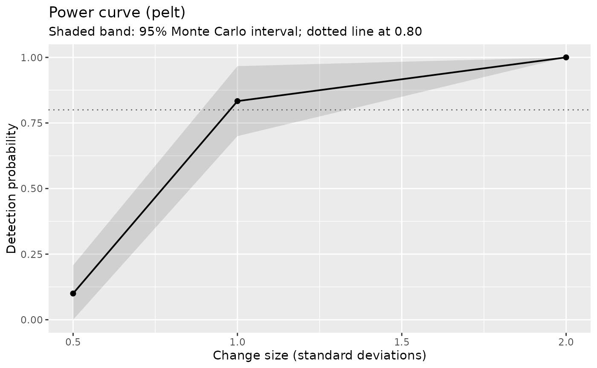

Simulates replicate series under a scenario and reports how often the detector finds the change, how accurately it locates it, and how often it reports changes that are not there. This is the calculation that should precede an analysis, and the one applied papers are increasingly asked for.
Usage
cpt_power(
n,
jump,
sigma = 1,
method = "pelt",
location = 0.5,
n_sim = 200,
tolerance = 5,
change_in = "mean",
noise = "gauss",
rho = 0,
df = 3,
seed = NULL,
parallel = TRUE,
...
)
# S3 method for class 'ggcpt_power'
tidy(x, ...)
# S3 method for class 'ggcpt_power'
print(x, ...)
# S3 method for class 'ggcpt_power'
autoplot(object, ...)Arguments
- n
Series length.
- jump
Size of the change, in units of
sigma. A vector runs one scenario per value.- sigma
Noise standard deviation. Defaults to
1.- method
Detection method. Defaults to
"pelt".- location
Changepoint position, as a fraction of
nin \((0, 1)\) or an integer position. Defaults to0.5. A vector runs one scenario per value.- n_sim
Replicates per scenario. Defaults to
200.- tolerance
A detection counts as finding the change when it falls within this many positions of it. Defaults to
5.- change_in
What changes. Defaults to
"mean".- noise
Noise model, passed to
cpt_simulate().- rho
AR(1) parameter when
noise = "ar1".- df
Degrees of freedom when
noise = "t".- seed
Optional seed. The seed is scoped to this call:
.Random.seedis saved and restored, so a seeded call inside a simulation loop does not pin the loop's own stream.- parallel
Use
future::plan()when future.apply is available? Defaults toTRUE. It has no effect unless a non-sequential plan is set, but when one is it changes where the replicates' random numbers come from – see the section below, which matters if the power figure is going into a paper.- ...
Additional arguments passed to
cpt_detect().- x
A
ggcpt_powerobject.- object
A
ggcpt_powerobject (forautoplot()).
Value
A ggcpt_power object: a tibble with one row per scenario —
n, jump, sigma, location, power
(proportion of replicates detecting the change within
tolerance), mc_se (the Monte Carlo standard error of that
proportion), mean_abs_error (location error among detections),
false_positive_rate (mean number of extra changepoints per
replicate) and n_sim — with print() and
autoplot().
Reproducibility under a parallel plan
A seeded call is reproducible for a given future::plan(),
and not across plans. Under a parallel plan the replicates' random numbers
come from future.apply's parallel-safe L'Ecuyer streams, derived
from seed; run sequentially they come from the calling stream that
seed set. Both are deterministic, and they are not the same
numbers. Measured on two scenarios at n_sim = 8, one and the same
seed = 11 gave power = 0, 1 sequentially and
0.125, 0.875 on two workers.
So the guarantee is: same seed and same plan, same answer – every time,
whichever plan it is. If a power figure needs to be reproducible by
someone else, pin the execution as well as the seed: pass
parallel = FALSE, or state the plan alongside the seed. Raising
n_sim narrows the gap, because it is Monte Carlo error rather
than disagreement – both estimates are of the same quantity, and
mc_se says how precisely.
This is specific to cpt_power(), which is the one function here
whose parallel tasks consume random numbers. The other six that dispatch
on future::plan() – cpt_benchmark(),
cpt_batch(), cpt_consensus(),
cpt_influence(), cpt_sensitivity() and
ggcpt_compare() – farm out work that is deterministic
given its input, and were measured to return identical results under a
sequential and a two-worker plan, stochastic engines included.
Examples
# \donttest{
pw <- cpt_power(n = 200, jump = c(0.5, 1, 2), n_sim = 30, seed = 1)
pw
#> ggcpt_power (method: pelt, change in mean, gauss noise, tolerance 5)
#> 3 scenario(s), 30 replicates each
#>
#> # A tibble: 3 × 9
#> n jump sigma location power mc_se mean_abs_error false_positive_rate
#> <int> <dbl> <dbl> <int> <dbl> <dbl> <dbl> <dbl>
#> 1 200 0.5 1 100 0.1 0.0548 2.67 0.1
#> 2 200 1 1 100 0.833 0.0680 1.32 0.167
#> 3 200 2 1 100 1 0 0.467 0
#> # ℹ 1 more variable: n_sim <int>
#>
#> Monte Carlo standard errors are in `mc_se`; a power of 0.80 from 30
#> replicates is only known to about +/- 0.14.
ggplot2::autoplot(pw)

# }